الهدف من هذا الباب :
تمكينك من التمييز بين الوقوف والتوقف .
التعرف على الأماكن التي يمكنك الوقوف والتوقف بها : داخل مواطن العمران وخارجها
في طريق ذات اتجاهين أو ذات اتجاه واحد
و سوف تتعرف كذلك على الأماكن التي يحجر الوقوف والتوقف بها.
التوقف هو وقوف عربة بالطريق بصورة مؤقتة لصعود أشخاص أو نزولهم أو لشحن بضائع أو تفريغها وعلى السائق أن يبقى بمقود العربة أو على مقربة منها لتحويلها عند الاقتضاء.
أما الوقوف فهو مكوث عربة بالطريق مع إيقاف المحرك لأسباب غير التي تميز التوقف.
يجب أن لا يشكل توقف أو وقوف أي عربة بالطريق أو توابعه خطرا على مستعملي الطريق وأن لا يتسبب في تعطيل حركة المرور وأن لا يحول دون الدخول إلى الأملاك المجاورة.
ويحجر الوقوف المفرط والوقوف أو التوقف الخطير أو المضايق.
يعتبر وقوفا مفرطا كل وقوف بصفة مستمرة وبنفس المكان على الطريق لمدة تتجاوز 7 أيام.
الوقوف والتوقف داخل مواطن العمران
يجب أن يتم وقوف أي عربة داخل مواطن العمران حسب القواعد التالية :
-قرب الرصيف وعلى مسافة لاتزيد عن 30 صم
-في نفس اتجاه حركة الجولان
-على الجهة اليمنى من الطريق ذات الاتجاهين
-على الجهة اليمنى أو اليسرى من الطريق ذات الاتجاه الواحد ما عدى الحالات التي تتخذ فيها السلطات ذات النظر إجراءات مخالفة.
الوقوف والتوقف خارج مواطن العمران
يجب أن يتم توقف أو وقوف أي عربة خارج مواطن العمران على الحاشية :
-إذا كانت الحاشية غير مستعملة لسير المترجلين أو مهيأة لبعض اصناف مستعملي الطريق
-إذا كان عرض الحاشية كاف ويسمح بتوقف أو وقوف العربات
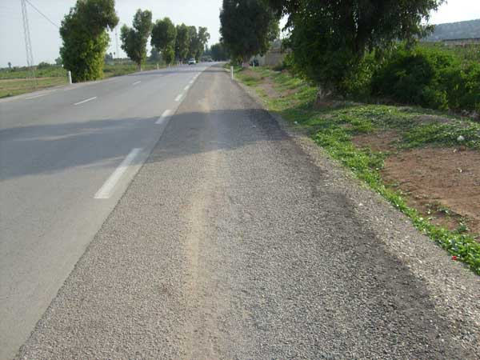
عرض هذه الحاشية كاف و يسمح بالوقوف و التوقف
التمييز بين العلامات : منع الوقوف والتوقف
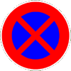
تمنع هذه العلامة الوقوف والتوقف بداية منها وإلى حدود المفترق القادم.
تبين هذه الصورة خط أصفر اللون متواصل يكمل أو يعوض العلامة السابقة.
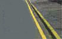
تمكنني هذه العلامة من التوقف وتحجر الوقوف إلى حدود المفترق القادم .
تبين هذه الصورة خط أصفر اللون متواصل يكمل أو يعوض العلامة السابقة.
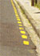
يمكن إضافة إلى إحدى العلامات العمودية السابقة اللوحات التالية :
يمنع الوقوف أو التوقف
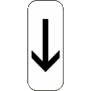
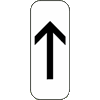
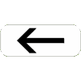
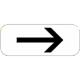
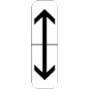
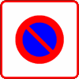
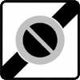
التوقف او الوقوف الخطير
يحجر التوقف أو الوقوف الخطير
ويعتبر التوقف أو الوقوف خطيرا بالأماكن التي تكون فيها الرؤية محدودة وخاصة ب :
-المفترقات وبالقرب منها على مسافة تقل عن 10 متر خارج مواطن العمران و3 متر داخلها ,
-بقمم المرتفعات والمنعرجات إذا كانت الرؤية غير مضمونة على مسافة 50 م على الأقل في الاتجاهين
-على الممرات العليا والجسور وتحتها وبالأنفاق ;
-عند تقاطع الطرقات مع السكك الحديدية وبالقرب منها على مسافة تقل عن 30 متر خارج مواطن العمران وعن 10 متر داخلها.
التوقف أو الوقوف المضايق
يحجر التوقف أو الوقوف المضايق و.يعتبر التوقف أو الوقوف مضايقا في الحالات التالية :
-على الأرصفة
-على الممرات الخاصة بالمترجلين وبالقرب منها على مسافة تقل عن 3 متر إن كانت موجودة بالمفترق
-على الممرات الخاصة ببعض أصناف مستعملي الطريق
-بالأماكن المخصصة لوقوف بعض أصناف مستعملي الطريق
-بالممرات والسبل والمحطات المخصصة لعربات النقل العمومي للأشخاص
-بقرب أو بجانب علامات الطريق إذا كانت العربة تحجب رؤية هذه العلامات على بقية مستعملي الطريق
-ما بين حافة المعبد وخط متواصل عندما يكون عرض الجزء الشاغر من المعبد ما بين الخط والعربة لا يسمح بمرور عربة أخرى دون السير على الخط أو اجتيازه
-على الجهة اليسرى للمعبد ذي الاتجاه الواحد إذا كان الجزء الشاغر من المعبد في صورة وقوف عربات على الجهتين دون 3متر.
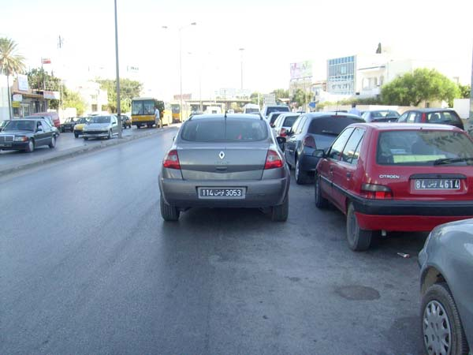
يحجر الوقوف أو التوقف في الصف الثاني على المعبد لأنه يضايق بقية مستعملي الطريق.
يعتبر وقوف العربات مضايقا أيضا :
-قرب أماكن الأشغال
-في الصف الثاني على المعبد
-أمام مداخل الممتلكات و المستودعات و المآوي المهيئة لدخول أو خروج العربات
-على أقل من 20 م من ممر المترجلين إذا كان هذا الأخير لا يوجد على مستوى المفترقات
يخضع الوقوف لقواعد خاصة
الوقوف في المناطق الزرقاء
تنظم قواعد الوقوف في هذه المناطق من طرف السلط البلدية الراجعة لها بالنظر.
الوقوف بمقابل
عندما يكون الوقوف بمقابل يقع تنبيه السائق بعبارة بمقابل أو بإحدى العلامات التالية :
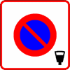
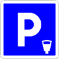
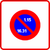
إذا تم وضع هذه العلامة في بداية المنطقة العمرانية يطبق الوقوف بالتداول على كامل هذه المنطقة
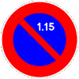
الوقوف ممنوع من 1 إلى 15 من كل شهر
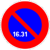
يمنع الوقوف من 16 إلى نهاية الشهر